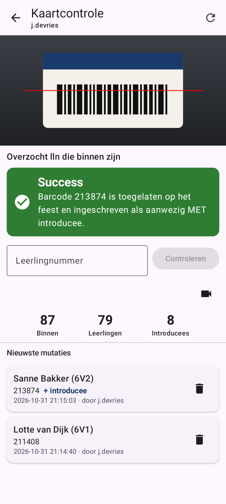
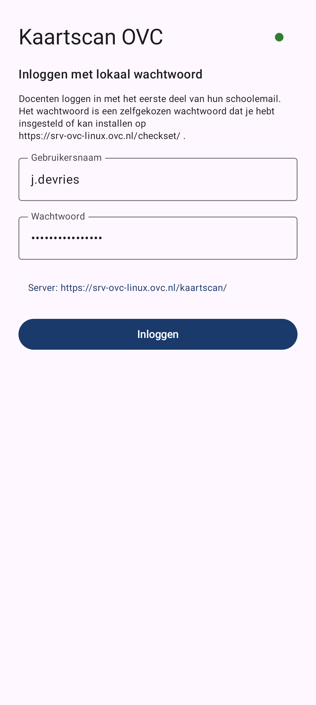
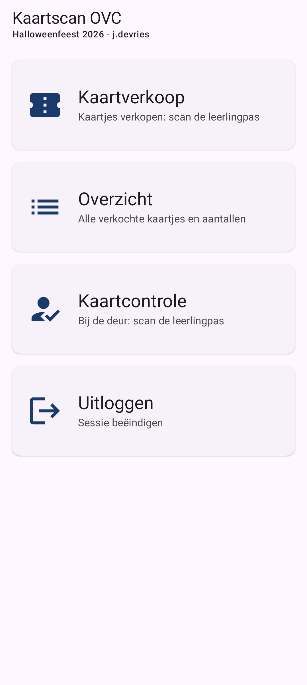
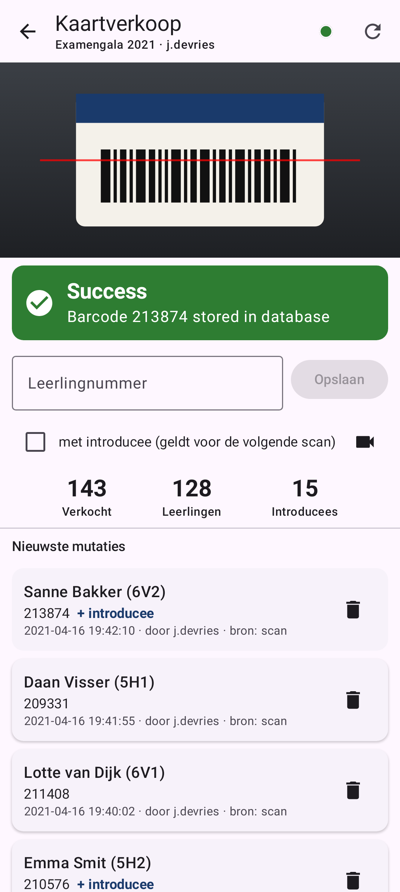
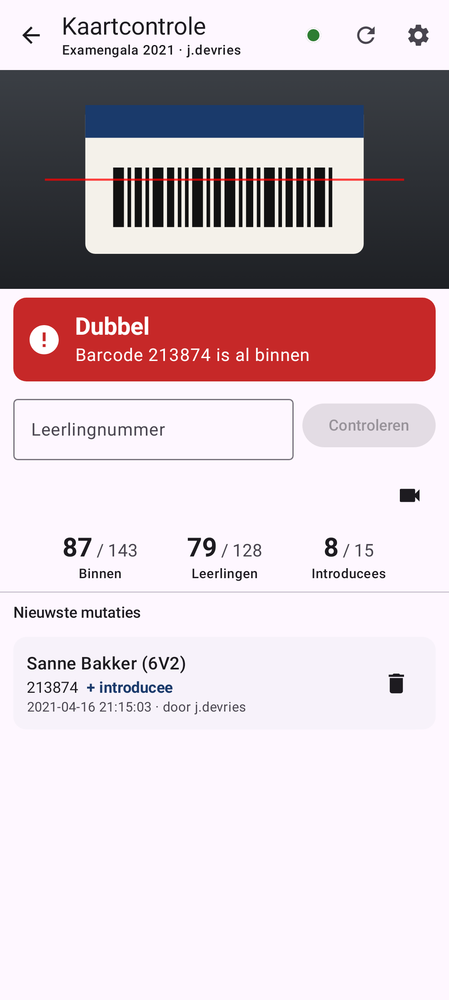
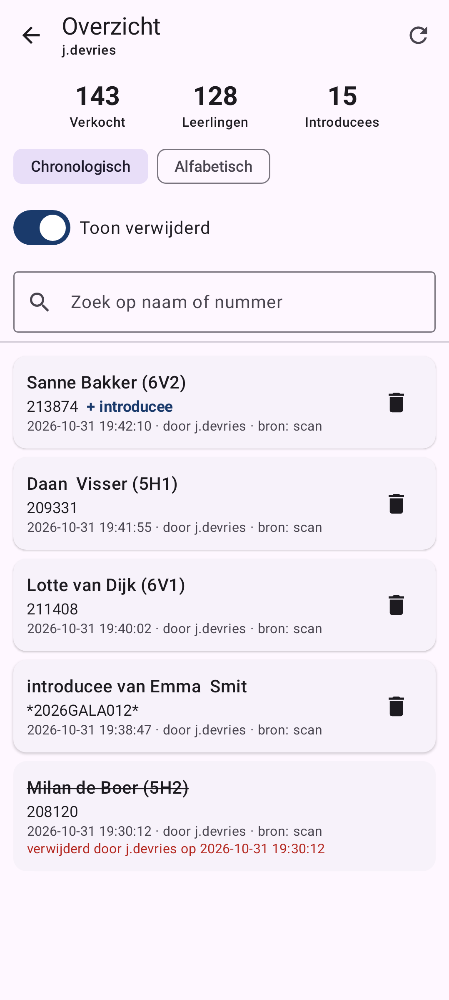

Kaartjes verkopen en controleren met je telefoon
Kaartscan is de Android-app bij Kaartscan OVC. Je scant de barcode op de leerlingpas met de camera, en de app regelt de rest. Een laptop met losse barcodescanner is niet meer nodig.
leerlingnummer 213874 · introducee *2026GALA012*
In drie stappen aan de slag
-
Installeer de app
Download het APK-bestand van de laatste release en installeer het op een Android-telefoon (Android 7 of nieuwer).
-
Log in
Met je gebruikersnaam (het eerste deel van je schoolmail, bijvoorbeeld
j.devries) en het wachtwoord dat je hebt ingesteld op checkset. Alleen beheerders van Kaartscan komen binnen. -
Kies wat je doet
Op het startscherm kies je kaartverkoop, overzicht of kaartcontrole. Met de terugknop kom je weer op het startscherm. Daar staat ook Uitloggen.


Leerling betaalt, jij scant de pas
Houd de barcode van de leerlingpas onder de rode lijn. De app herkent hem vanzelf en slaat de verkoop direct op. Je hoort een piep en ziet een groene melding.
- Koopt de leerling ook een kaartje voor een introducee? Vink dan eerst met introducee aan en scan daarna. Het vinkje gaat na een geslaagde verkoop vanzelf weer uit.
- Pas kapot of camera werkt niet mee? Typ het leerlingnummer in het veld en druk op Opslaan.
- Onder Nieuwste mutaties zie je de laatste verkopen. Een fout herstel je met het prullenbakje.

Bij de deur: groen is binnen, rood is niet
Scan de pas van iedereen die binnenkomt. De melding is groot genoeg om op armlengte te lezen, en de app piept en trilt mee, zodat je niet steeds naar het scherm hoeft te kijken.
- Groen: de leerling heeft een kaartje en staat nu als aanwezig ingeschreven. De melding zegt of er een introducee mee mag (MET of ZONDER introducee).
- Rood: geen kaartje gekocht, of de leerling is al binnen. Een rode melding klinkt ook anders.
- Bovenaan staat hoeveel mensen er binnen zijn, leerlingen en introducees apart.

Alle verkochte kaartjes op een rij
Het overzicht toont het aantal verkochte kaartjes en de volledige lijst. Sorteer chronologisch of alfabetisch, zet verwijderde verkopen aan of uit, en zoek snel op naam of leerlingnummer.

Wat de melding betekent
De meldingen komen rechtstreeks van de Kaartscan-website, dezelfde als op de laptop.
| Melding | Waar | Betekenis en wat je doet |
|---|---|---|
| Success | Verkoop | Het kaartje is opgeslagen. |
| Success | Controle | Toegelaten en ingeschreven als aanwezig, MET of ZONDER introducee. |
| Dubbel | Verkoop | Deze leerling heeft al een kaartje. Er is niets opgeslagen. |
| Dubbel | Controle | Deze leerling is al binnen. Controleer of dit dezelfde persoon is. |
| Geen kaartje gekocht | Controle | Er hoort geen verkocht kaartje bij deze pas. Stuur de leerling naar de kaartverkoop. |
| Barcode format fout | Beide | De camera las iets anders dan een leerlingnummer (minstens 6 cijfers) of een introduceecode zoals *2026GALA012*. Scan opnieuw of typ het nummer. |
| Mislukt | Beide | Geen verbinding met de server. Kijk in de lijst of de scan toch is opgeslagen voordat je opnieuw scant. |
Handig om te weten
Donkere zaal
Met het bliksemsymbool rechtsboven in het camerabeeld zet je de zaklamp aan.
Eén keer scannen is genoeg
Dezelfde pas wordt een paar seconden genegeerd, en na elke melding wacht de scanner even. Een pas die blijft liggen telt dus niet dubbel.
Scherm blijft aan
Zolang de camera open is gaat het scherm niet uit. Zet de camera uit met het camera-icoon als je alleen wilt typen.
Introduceecodes
Gala-introducees hebben een eigen barcode. Wie zo'n code typt, mag de sterretjes weglaten: 2026GALA012 wordt vanzelf *2026GALA012*.
Ingelogd blijven
De app onthoudt je sessie. Bij het opstarten kun je kiezen voor Doorgaan als, zolang de sessie op de server nog geldig is.
Lijst bijwerken
Werken meer mensen tegelijk? Met de vernieuwknop rechtsboven haal je de nieuwste lijst en aantallen op.
De app op je telefoon zetten
- Open op je telefoon de pagina Releases en tik bij de nieuwste versie op het bestand
kaartscan-v…apk. - Open het gedownloade bestand. Android vraagt of je apps uit deze bron wilt toestaan: kies Toestaan.
- Tik op Installeren en open de app. Geef bij de eerste scan toestemming voor de camera.
- Een nieuwe versie installeer je op dezelfde manier, over de oude heen. Je hoeft niets eerst te verwijderen.
Vragen of problemen
Kaartscan OVC wordt beheerd door Rik Snel, r.snel@ovc.nl. Een fout melden of meekijken met de code kan ook via de issues op GitHub.